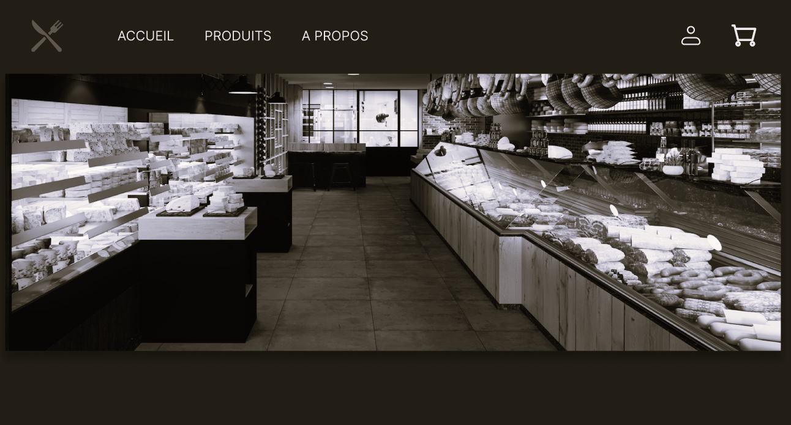
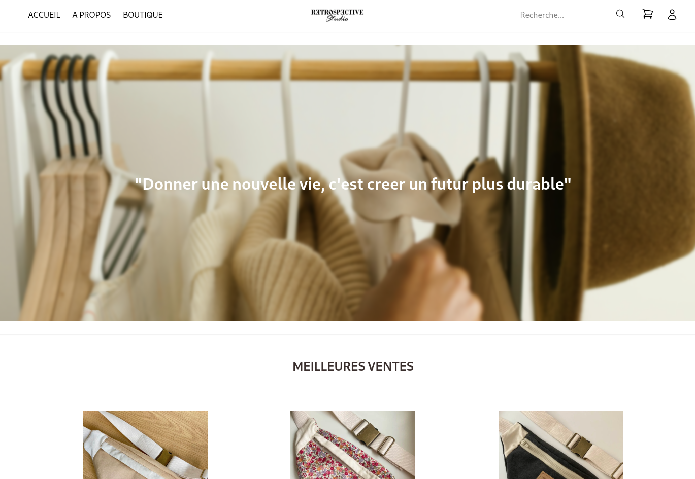
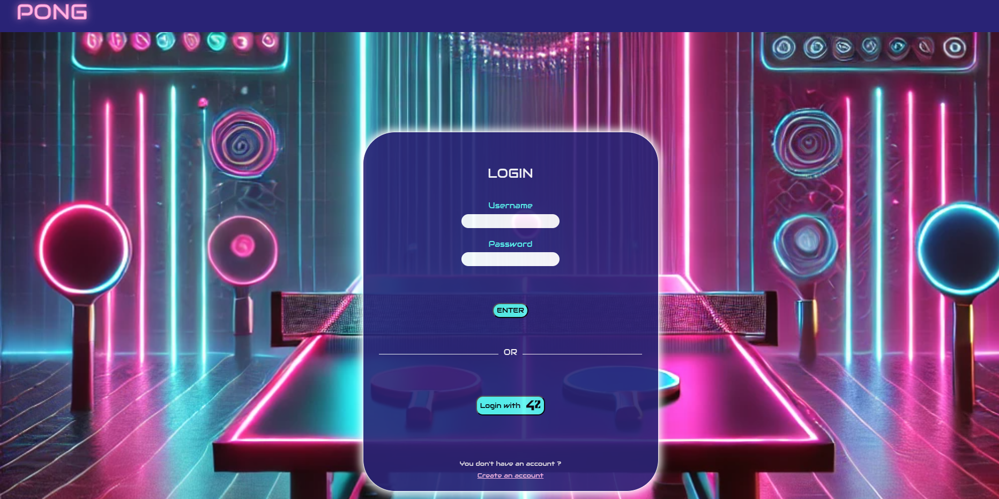

À PROPOS DE MOI
Après de nombreuses années dans des secteurs différents mais très passionnants, j’ai choisi de changer pour donner un nouveau souffle à ma carrière en devenant développeur web.
J’ai commencé par une formation chez OpenClassrooms pour obtenir un titre de développeur Web/Mobile. Je réalise de nombreux projets qui me tiennent à cœur, ainsi que d’autres pour apprendre de nouvelles chose

PROJETS

BOUCHERIE
Projet perso pour mon ancien patron en boucherie, en cours de développement
TECHNOLOGIE

RESTROSPECTIVE STUDIO
Projet profesionnel pour une amie fait avec une collègue de 42, toujours en développement sur la partie front, mais bientôt déployé entièrement avec frontend/backend/paiement/API et autres.
TECHNOLOGIE

TRANSCENDENCE
Dernier projet de 42, avec 2 autres collègues. Je me suis occupé de la partie DevOps et backend du site.